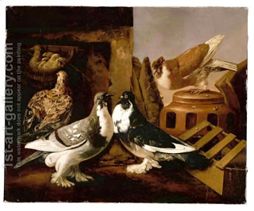

Chullin 140 -Sending Away The Mother on Non-Kosher Birds
One does not need to send away the mother-bird of a non-kosher variety before taking her eggs. The Torah used a special word for "bird" - "tzippor," which is used only for kosher birds.
If a nonkosher bird is sitting on eggs of a kosher bird, or vice versa, one does not have to send her away. Now, we understand the nonkosher bird case - it is non-kosher, as we just learned, even if it sits on kosher eggs, but what’s the problem with the kosher bird on nonkosher eggs? - The Torah said "and the young you will take for yourself" and here, since they are nonkosher, you can only take them for someone else.
Rabbi Yirmiyah asked, "If the bird sits on unattached feathers which are on the eggs, is it considered sitting on the eggs or no, and does one have to send her way?" - No answer was found. Male partridges characteristically sit on other birds’ eggs, does one have to send him away? Rabbi Eliezer indeed says "yes," but the Sages say "no."
Art: Jacomo (or Victor, Jacobus) Victors - Still Life Of Two Courting Doves, A Partridge And Her Chicks